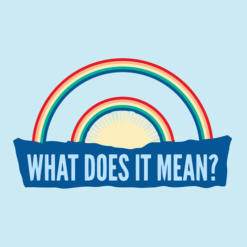

What Is "Semantic HTML" Anyway?

semantic relating to meaning in language or logic.
Choosing the right elements/attributes for the content
-
Every HTML element and attribute has a specified meaning
- HTML should be readable by humans and machines
-
Don't think in terms of "what does this element look like/do"
- Behavior/presentation can be changed with CSS/JS
- Instead, think about what elements mean
HTML Sticks Around
After a chunk of HTML is built, CSS, JavaScript, and other external things come to rely on a specific DOM.
- This makes it harder to change in the future
- Much easier to get it right the first time
- This also means that ugly HTML can spawn ugly CSS and JS
When User Agents Can Understand Your Content, Magic Happens
-
Crawlers/SEO
- Example: if Google can tell what parts of your page are important, your search result snippet will be nicer
- Screen readers and other accessibility software
- Tools like Readability
-
Browsers
<input type="text"> vs <input type="email">
How Do I Write Semantic HTML?
Element Awareness
Read up on what elements are available, what they mean, what attributes mean, etc.
Google is your friend.
It's A Subjective Thing
People may have different opinions about what is "more semantic", and that's okay.
Some Heuristics
-
Less code is usually better. This is true in pretty much any language.
- Mastering CSS can help reduce the need for wrapper divs, layout tables, and other unsemantic weirdness.
- Is the site readable/usable without any CSS/JavaScript?
- Ideally HTML should be as readable as plaintext (or better)
- Element names/attributes should add value for humans as well as machines
- Validate!
←
→
/
#